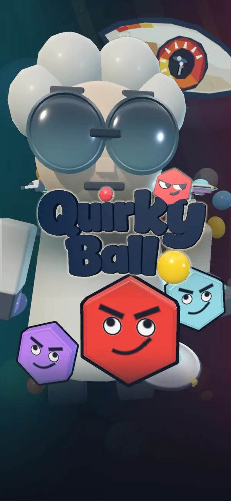
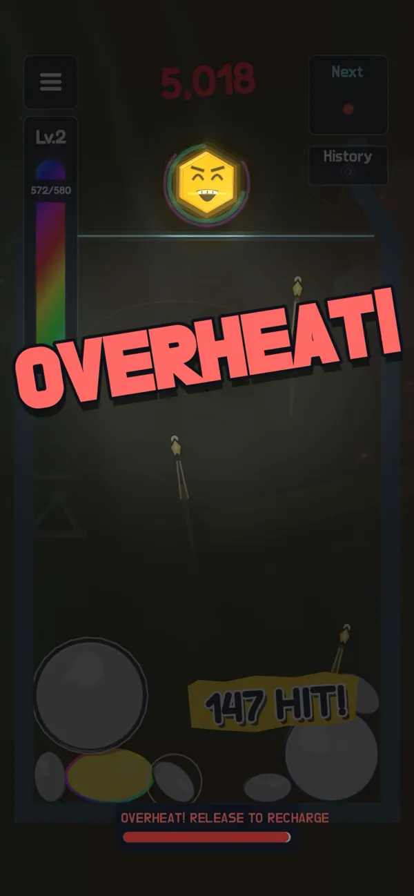
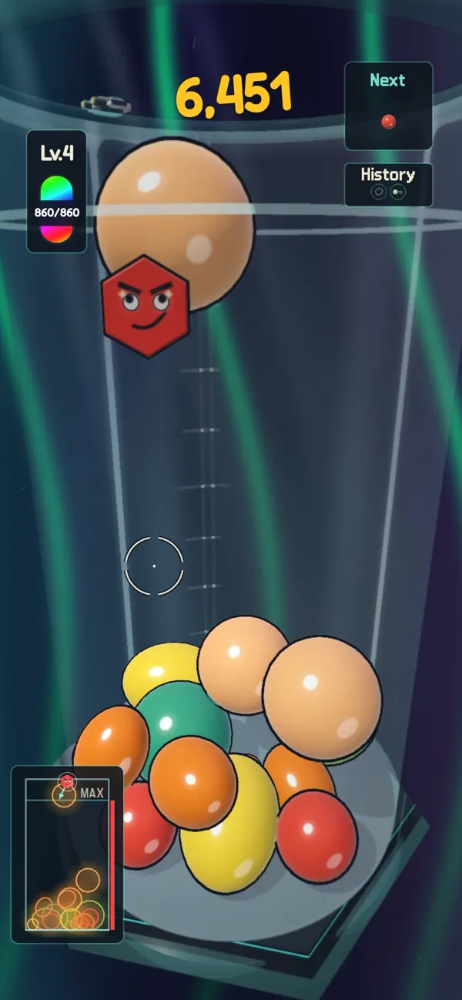
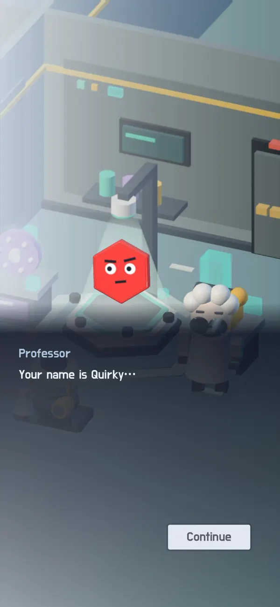
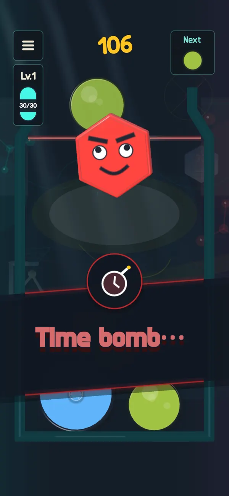
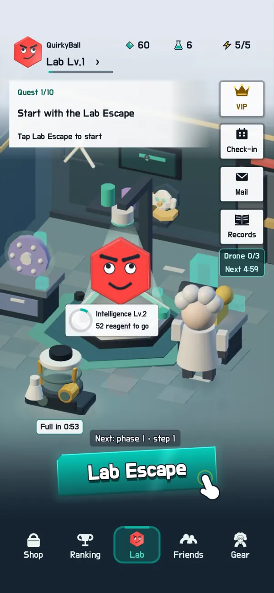
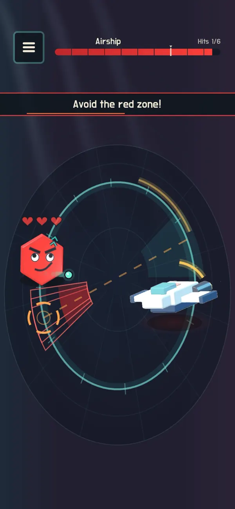
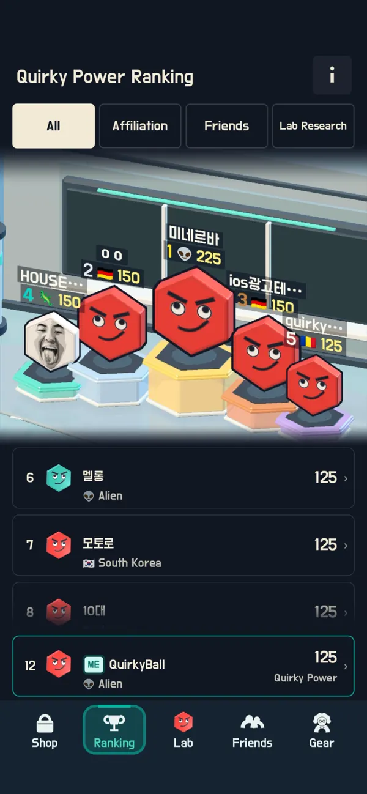
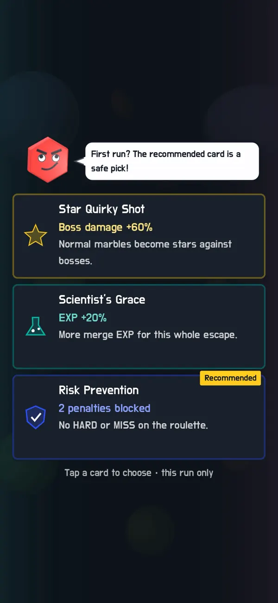
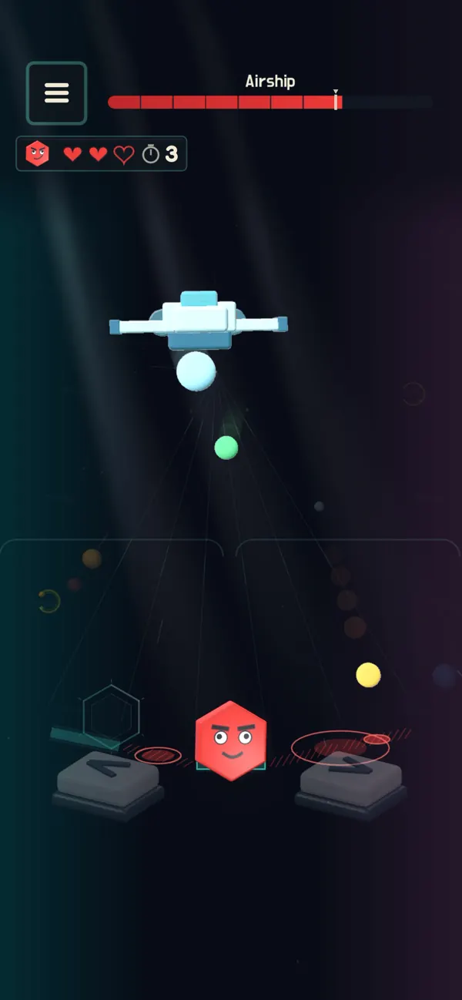

신작출시 준비 중
딸깍 서바이벌10key Survival
살아 있는 텐키(숫자 키패드)가 되어 끝없는 3D 키보드를 파고 내려가세요. 키를 부수고, 레벨업마다 스킬 카드를 고르고, 마우스에게서 살아남으세요.
- iOS
- Android
- 광고 없음
자세히 보기
유료 앱, 앱 내 구매 포함
출시작버전 2.0.0
Quirky Ball
01 / 10타이틀
2D 머지에서 3D 비커, 보스전까지. 쿼키와 함께 실험실을 탈출하세요.
무료 다운로드, 광고 및 앱 내 구매 포함
플레이어들이 함께 연구한 점수—점
—최근 플레이 횟수
기록을 불러오는 중…
어떤 점수를 더했나요?
클래식·실험실 연구 판의 점수 기록과 지금 모든 플레이어의 쿼키력을 더했어요. 최근 플레이 횟수는 점수가 기록된 판과 실험실 탈출 판의 수예요. 테스트·운영 계정, 관리자가 제외하거나 고친 기록, 계정에 연결되지 않은 기록과 중복은 뺐어요. 서비스 초기 기록 일부는 서버 보관 기간이 지나 이미 지워져 들어 있지 않아요.












동무와 멋진신세계
다른 장르의 게임에서 만나요